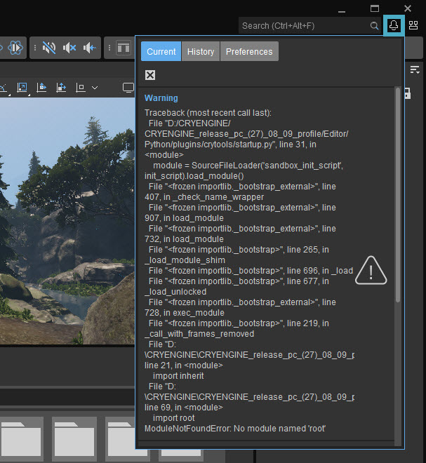
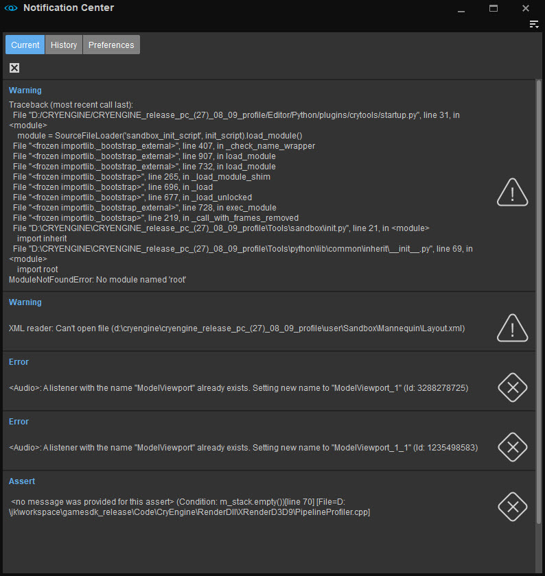
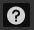
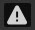
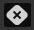

The notification center is a combination of pop-up messages that are not modal and don't require user input, and is a place where a list of tasks, errors and warnings can be seen. These messages show notifications, warnings and errors and background tasks.

In this corner, by default, pop-up messages will appear. These messages:
- will contain an icon detailing its critical level (Info, Warning, Assert and Error)
- can be clicked on to immediately hide them and take you to where the error is
- will be, by default, combined into a single pop-up (if they are notifications coming from warnings, asserts and errors)
- can be completely disabled in the preferences panel described below
Shift+left click will hide all current pop ups.
When you click on the button next to the Menu Search window, the Notification Center window appears. This window has three tabs, Current, History and Preferences.
The Notification Center can also be opened by going to Tools → Advanced → Notification Center.

Menu
The Menu can be accessed via the 
Current
The Current tab shows a collection of all notifications.
- Notifications coming from warnings, asserts and errors will be, by default, combined into a single notification after more than 25 are displayed. This option can be disabled, and the number can be tweaked in the preferences panel described below
- Clicking on a notification in this panel will hide it, and if possible, take the user to were the error originated from
- Right clicking a notification will spawn a context menu with an option to copy the contents of the message in the notification
- All notification can be hidden by clicking the Clear All (
) button on the top-left
History
The Notification History contains a full history of messages. Double-clicking an item will, if possible, take the user to where the error originated from.
| Button | Description |
|---|---|
 | Clears the list of messages. |
| Shows the complete history of messages. | |
| Copies the history to the clipboard. | |
 | Shows/hides info messages. |
 | Shows/hides warnings. |
 | Shows/hides errors. |
Clicking on the column headers (Type, Time, Title, Message) will sort the items in the list.
Preferences
| Option | Description |
|---|---|
| Allow Pop-ups | Enable/disable notification pop-ups for warnings, asserts and errors. These will still be stored in both the notification list and history. |
| Combine Notifications | Enable/disable warnings, asserts and errors being combined into a single notification when the max number of notifications is displayed in the notification list. |
| Notification Max Count | Maximum number of notifications displayed before they are combined into a single notification in the notification list. |